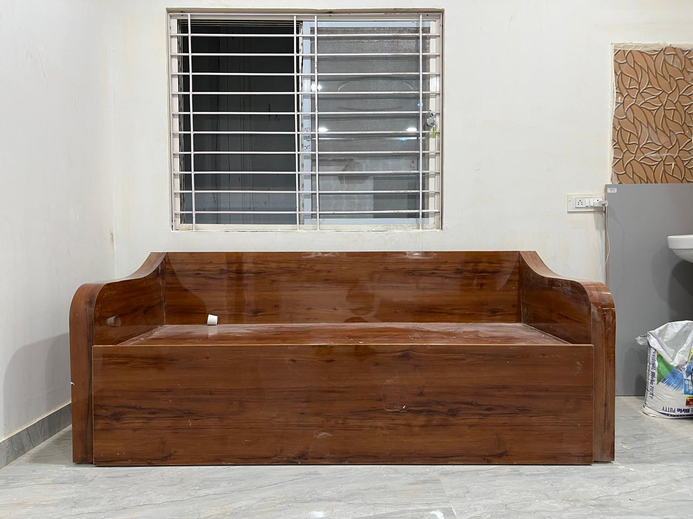
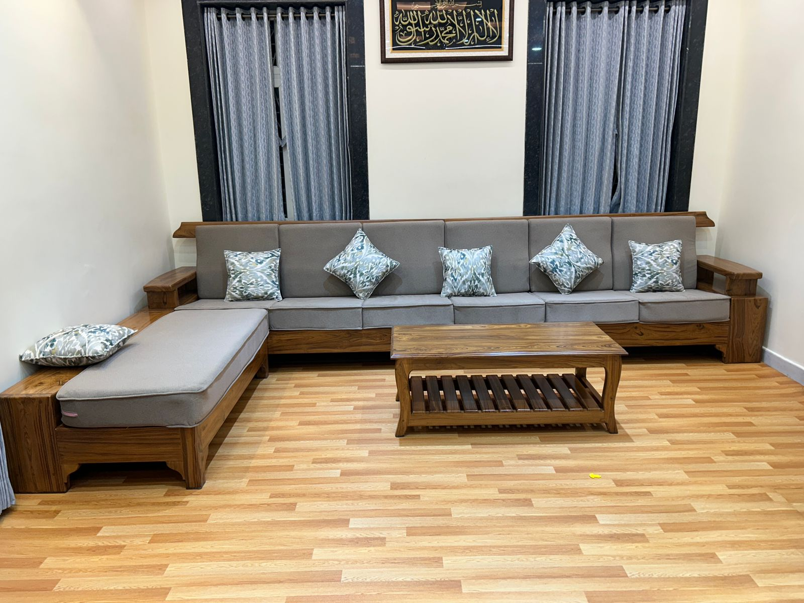

Looking for the best modern sofa designs in Hyderabad? Marvel Furniture Works brings you premium quality custom sofa sets in Hyderabad designed for comfort, durability, and style. Whether you want a luxury sofa, a wooden sofa set, or a modern L shape sofa, we create furniture that perfectly fits your home and lifestyle.
Our expert craftsmen design sofas using high-quality wood, foam, and fabric to ensure long-lasting performance. We focus on combining modern aesthetics with traditional strength to deliver furniture that stands out in Hyderabad homes.
At Marvel Furniture Works, we offer a wide range of sofa styles for customers in Hyderabad. Our collection is designed to suit modern homes while providing maximum comfort.
Each sofa is crafted with precision and attention to detail, ensuring a perfect balance of style and function.


Choosing the right sofa is important because it defines your living space. At Marvel Furniture Works, we focus on delivering high-quality sofa sets in Hyderabad that meet your expectations.
Our sofas are built using strong wood frames, high-density foam, and premium upholstery materials. This ensures durability, comfort, and long-lasting performance.
We believe that quality furniture starts with quality materials. That’s why we use the best materials available in Hyderabad and across India.
Our wooden sofas are made from strong hardwood that provides excellent durability. We use high-density foam to ensure maximum comfort and long-lasting shape. Our fabrics and leather materials are carefully selected to provide a premium finish.
With our focus on quality, you get a sofa that not only looks great but also lasts for years.
We follow a simple and effective process to create your perfect sofa in Hyderabad:
This process ensures that you receive a sofa that perfectly matches your needs.
If you are searching for sofa manufacturers near you in Hyderabad, Marvel Furniture Works is your trusted choice. We provide high-quality custom furniture in Hyderabad for homes and offices.
We serve customers across Hyderabad including Banjara Hills, Jubilee Hills, Kukatpally, Gachibowli, and Miyapur with premium custom sofa designs.
Yes, we specialize in custom sofa designs for customers across Hyderabad.
We use high-quality wood, foam, fabric, and leather to ensure durability and comfort.
It usually takes 7–15 days depending on the design and customization.
Yes, we provide delivery and installation services across Hyderabad.
L shape sofas are ideal for compact living spaces as they maximize seating.